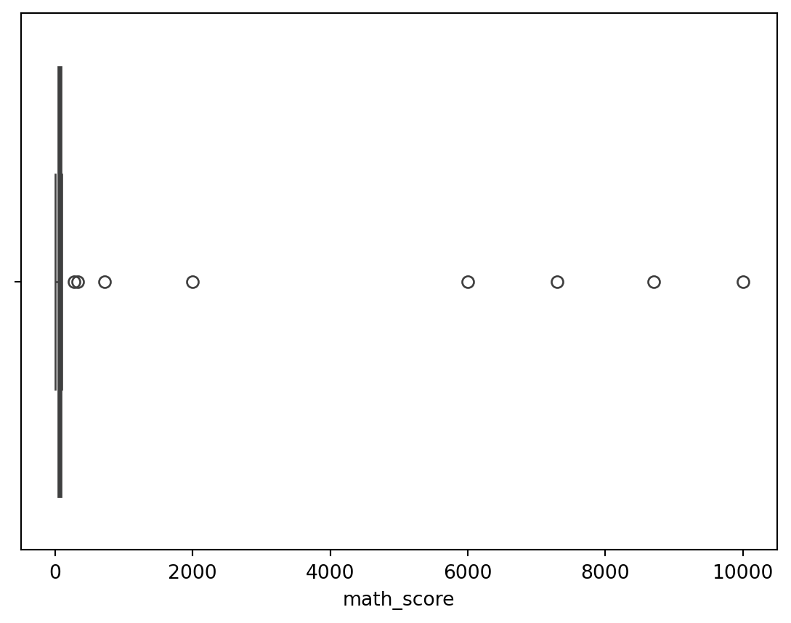
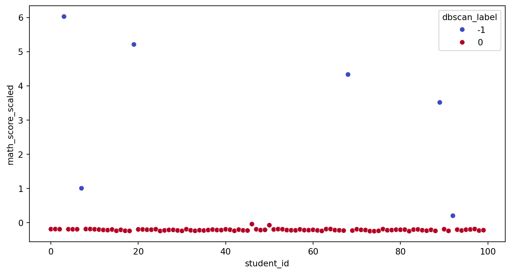

import pandas as pd
import numpy as np
from sklearn.ensemble import IsolationForest
from sklearn.cluster import DBSCAN
import matplotlib.pyplot as plt
import seaborn as sns1.Introduction:
This blog aims to provide a comprehensive approach to identify anomalies in student math scores and visualizing the results. It uses boxplot to display the distribution of students’ math scores and the Isolation Forest model to detect these anomalies.DBSCAN labels for scatterplot is used to better view the clusters and visualization.
2. Import libraries:
3. Read the CSV file:
student_df = pd.read_csv('student_data.csv')
student_df.head()| student id | math_score | |
|---|---|---|
| 0 | 1 | 95 |
| 1 | 2 | 98 |
| 2 | 3 | 92 |
| 3 | 4 | 10000 |
| 4 | 5 | 91 |
4. Define the anomaly in the context:
The math score is considered as anomaly if the score is higher than 100. It creates a new column actualy_anomaly in the dataframe to indicate whether the data is anomaly.
student_df['actual_anomaly'] = student_df['math_score'] > 100
student_df.head()| student id | math_score | actual_anomaly | |
|---|---|---|---|
| 0 | 1 | 95 | False |
| 1 | 2 | 98 | False |
| 2 | 3 | 92 | False |
| 3 | 4 | 10000 | True |
| 4 | 5 | 91 | False |
5. Visualizing students’ math scores using Boxplot:
Boxplot is a great way of displaying and showing the distribution of students’ math scores. It can show us about outliers intuitively and what their values are.
sns.boxplot(x=student_df.math_score)
plt.show()
6. Fitting an Isolation Forest Model for Anomaly Detection:
It uses Isolation Forest model algorithm for anomaly detection. The model is fitted to the math_score column of the student_df DataFrame to detect any anomalies in the math scores of the students.
model = IsolationForest(n_estimators=100, max_samples='auto', contamination=float(0.15), max_features=1.0)
model.fit(student_df[['math_score']])IsolationForest(contamination=0.15)In a Jupyter environment, please rerun this cell to show the HTML representation or trust the notebook.
On GitHub, the HTML representation is unable to render, please try loading this page with nbviewer.org.
IsolationForest(contamination=0.15)
7. Predicting anomalies in Student Math Scores:
It uses trained Isolation Forest model to predict anomalies in the math_score column of the student_df dataframe. model.decision_function will compute and return the anomaly score for each math score.
student_df['anomalies_scores'] = model.decision_function(student_df[['math_score']])
student_df['anomaly'] = model.predict(student_df[['math_score']])
student_df.head(20)| student id | math_score | actual_anomaly | anomalies_scores | anomaly | |
|---|---|---|---|---|---|
| 0 | 1 | 95 | False | 0.028871 | 1 |
| 1 | 2 | 98 | False | 0.013930 | 1 |
| 2 | 3 | 92 | False | 0.046547 | 1 |
| 3 | 4 | 10000 | True | -0.377246 | -1 |
| 4 | 5 | 91 | False | 0.052494 | 1 |
| 5 | 6 | 89 | False | 0.049740 | 1 |
| 6 | 7 | 90 | False | 0.050532 | 1 |
| 7 | 8 | 2000 | True | -0.366733 | -1 |
| 8 | 9 | 100 | False | 0.000000 | 1 |
| 9 | 10 | 100 | False | 0.000000 | 1 |
| 10 | 11 | 88 | False | 0.047625 | 1 |
| 11 | 12 | 77 | False | 0.040150 | 1 |
| 12 | 13 | 58 | False | 0.035680 | 1 |
| 13 | 14 | 50 | False | 0.055380 | 1 |
| 14 | 15 | 79 | False | 0.045024 | 1 |
| 15 | 16 | 19 | False | 0.014319 | 1 |
| 16 | 17 | 64 | False | 0.051140 | 1 |
| 17 | 18 | 19 | False | 0.014319 | 1 |
| 18 | 19 | 13 | False | 0.003310 | 1 |
| 19 | 20 | 8700 | True | -0.340421 | -1 |
8. Calculating the accuracy of the model:
It calculates the accuracy of the anomaly detection model.
correct_anomalies = student_df[(student_df['anomaly'] == -1) & (student_df['actual_anomaly'])].shape[0]
total_anomalies = student_df['actual_anomaly'].sum()
accuracy = 100 * correct_anomalies / total_anomalies
accuracy100.09. Using scatter plots to clustering students with DBSCAN:
from sklearn.preprocessing import StandardScaler
student_df['math_score_scaled'] = StandardScaler().fit_transform(student_df[['math_score']])
db = DBSCAN(eps=0.2, min_samples=2).fit(student_df[['math_score_scaled']])
student_df['dbscan_label'] = db.labels_
plt.figure(figsize=(10, 5))
sns.scatterplot(x=student_df.index, y='math_score_scaled', hue='dbscan_label', data=student_df, palette='coolwarm')
plt.xlabel("student_id")
plt.show()